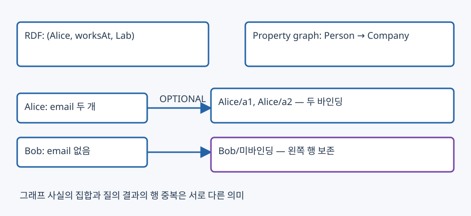

14. SPARQL과 Cypher — 그래프 질의의 바인딩·경로·중복
이 장은 sparql.pdf 48쪽과 cypher.pdf 45쪽 전체의 핵심을 작은 예제에 연결한다. 그래프를 검색 대상으로 활용하려면 어떤 데이터 모델에 어떤 패턴을 실행하는지 알아야 한다. 아래 코드는 질의 의미를 읽는 예제이며 이 페이지가 RDF 저장소·Neo4j를 실행하지는 않는다.
1. RDF와 property graph의 데이터 모델
RDF의 기본 사실은 (subject, predicate, object) triple이다. 주어는 IRI 또는 blank node, 술어는 IRI, 목적어는 IRI·blank node·literal이 될 수 있다. IRI는 식별자이며 표시 이름과 다르다. blank node의 문서 내부 ID를 세계 공통 개체 ID처럼 사용하지 않는다. RDF graph는 triple 집합이고, SPARQL의 질의 결과 행은 중복을 가질 수 있다. RDF 1.1 원문
@prefix ex: <https://example.org/> .
@prefix xsd: <http://www.w3.org/2001/XMLSchema#> .
ex:Alice ex:name "Alice" ; ex:age 30 ; ex:worksAt ex:Lab .
ex:Bob ex:name "Bob" ; ex:age 20 .
ex:Alice ex:email "a1@example.org", "a2@example.org" .
ex:Paris ex:name "Paris"@fr, "Parijs"@nl .
ex:Lab ex:code "020"^^xsd:string .
PREFIX는 긴 IRI를 짧게 쓰는 별칭이다. Turtle의 ;는 주어를 공유한 술어를, ,는 같은 주어·술어의 여러 목적어를 이어 쓴다. a는 rdf:type의 축약이다. 문자열 "020"과 정수20은 식별·비교 의미가 다르고, 언어 태그 @fr과 @nl도 데이터의 일부다. N-Triples·Turtle·RDF/XML은 RDF를 직렬화하는 방법으로 그래프 모델 자체와 구분한다. 연결 데이터는 식별 가능한 HTTP IRI·유용한 설명·다른 IRI 링크를 통해 해석을 돕는다. 임의 IRI를 쓸 수 있다는 것과 다른 사용자가 의미를 이해한다는 것은 다르다.
Property graph는 노드 라벨, 관계 타입, 노드·관계의 속성을 직접 다룬다. 예를 들면 (Alice:Person {age:30})-[:WORKS_AT {since:2020}]->(Lab:Company)다. RDF에서는 관계에 관한 추가 정보의 표현 방식을 별도로 정해야 한다. RDF와 property graph를 “모양만 다른 동일 스키마”로 취급하지 않는다.

그림 읽기: 모델은 저장·질의할 의미 구조, 실행계획은 그 의미를 계산하는 방법이다. 같은 데이터를 관계형 테이블·인접 리스트·간선 테이블 등에 저장할 수 있으므로 화면의 노드 그림만으로 물리 저장 방식이나 속도를 단정하지 않는다.
2. RDFS는 스키마이면서 추론 규칙을 가진다
sparql.pdf 3~13·41~47쪽의 class·property 정의도 RDF triple이다.
@prefix ex: <https://example.org/> .
@prefix rdf: <http://www.w3.org/1999/02/22-rdf-syntax-ns#> .
@prefix rdfs: <http://www.w3.org/2000/01/rdf-schema#> .
ex:Engineer rdfs:subClassOf ex:Person .
ex:Person rdfs:subClassOf ex:Agent .
ex:worksAt rdfs:domain ex:Person ; rdfs:range ex:Company .
ex:Alice rdf:type ex:Engineer ; ex:worksAt ex:Lab .
이 조건에서는 Engineer→Agent의 하위 클래스 관계, Alice의 Person·Agent 타입, Lab의 Company 타입을 RDFS 의미로 도출할 수 있다. rdfs:domain은 해당 속성을 쓰면 주어를 그 class로 추론하는 뜻이다. 데이터 검증의 “그 class가 아니면 입력 거부” 제약과 다르다. range도 목적어의 타입 추론에 쓰인다. subPropertyOf는 하위 속성의 사실이 상위 속성의 사실로도 성립하게 한다.
RDFS는 임의 업무 규칙 언어가 아니다. “Dog이고 나이14 이상이면 VeryOldDog” 같은 숫자 조건 규칙까지 자동 정의하지 않는다. 스키마가 email 속성을 정의했다고 모든 Person에 email 값이 들어 있는 것도 아니다. 이때 OPTIONAL이 필요하다. 추론 저장소 설정이 꺼져 있으면 명시된 triple만 질의될 수 있으므로 명시 그래프와 entailment regime을 구별한다.
3. SPARQL은 triple 패턴의 변수 바인딩을 구한다
PREFIX ex: <https://example.org/>
SELECT ?person ?name ?email
WHERE {
?person ex:name ?name ; ex:age ?age .
FILTER(?age >= 20)
OPTIONAL { ?person ex:email ?email }
}
ORDER BY ?person ?email
SELECT는 반환 변수, WHERE는 만족해야 하는 패턴, PREFIX는 이름 공간을 지정한다. FROM은 dataset/default graph 선택에 사용할 수 있고 HTTP endpoint 주소와 같은 문법 역할은 아니다. ?person ex:name ?name과 ?person ex:age ?age는 같은 ?person 바인딩으로 결합한다. 변수 이름을 다르게 쓰면 의도하지 않은 곱집합이 될 수 있다.
Alice의 email이 두 개이고 Bob의 email이 없으면 OPTIONAL 결과는 다음과 같다.
| person | name | |
|---|---|---|
| Alice | Alice | a1@example.org |
| Alice | Alice | a2@example.org |
| Bob | Bob | 미바인딩 |
email을 필수 패턴으로 바꾸면 Bob 행이 사라지고, Alice는 여전히 두 행이다. SELECT ?name만 해도 Alice가 두 번 나올 수 있다. SELECT DISTINCT ?name은 최종 투영된 값의 중복을 없애 두 이름을 반환한다. RDF triple 집합에 중복 사실이 없다는 것과 결과 행의 중복은 다른 문제다.
| 기능 | 의미·예 | 주의점 |
|---|---|---|
| conjunction | { ?x ex:worksAt ?c . ?c ex:city ?city } |
공유 변수에 호환되는 바인딩끼리 JOIN |
| UNION | { ?x ex:name "Paris"@fr } UNION { ?x ex:name "Parijs"@nl } |
양쪽 일치가 결과 중복으로 이어질 수 있음 |
| OPTIONAL | OPTIONAL { ?p ex:email ?email } |
없으면 미바인딩, 필수 패턴과 다름 |
| FILTER | 숫자 비교, &&, ` |
|
| 값 검사 | isIRI, isLiteral, STR, DATATYPE, LANG, BOUND |
STR(?p)는 전체 IRI 문자열, 짧은 이름과 다를 수 있음 |
| 정렬·잘라내기 | ORDER BY DESC(?age) ?person LIMIT 10 |
정렬 없이 LIMIT만 쓰면 안정적 Top-10 기준이 아님 |
OPTIONAL { ... FILTER(...) }는 선택 패턴의 일치 조건을 제한하고 왼쪽 행을 남길 수 있다. OPTIONAL 바깥에서 FILTER(BOUND(?email))를 쓰면 미바인딩 행을 제거한다. 이 차이는 SQL LEFT JOIN 뒤 WHERE가 NULL 행을 제거하는 경우와 연결해 읽는다.
4. 결과의 타입과 스키마 질의
| 형태 | 반환 | 예 |
|---|---|---|
| SELECT | 변수 바인딩 행 | SELECT ?p WHERE { ?p ex:worksAt ex:Lab } |
| ASK | boolean | ASK { ex:Alice ex:worksAt ex:Lab } |
| CONSTRUCT | template로 만든 RDF graph | CONSTRUCT { ?c ex:employs ?p } WHERE { ?p ex:worksAt ?c } |
| DESCRIBE | 해당 자원에 관한 RDF 설명 | DESCRIBE ex:Alice — 구체 범위는 구현 규약 확인 |
SELECT의 표·JSON/XML 직렬화는 IRI·literal·datatype·언어 태그·미바인딩을 보존해야 한다. 결과의 문자열 str(list_of_dict)를 엄격한 JSON과 혼동하지 않는다. CONSTRUCT는 조회된 바인딩을 template에 넣어 사실을 만드는 것으로 원본 DB를 UPDATE하는 명령이 아니다. 반환 RDF graph는 triple 집합이다.
스키마도 RDF이므로 SELECT ?c WHERE { ex:worksAt rdfs:range ?c }는 Company를 찾는다. ?c rdfs:subClassOf ex:Agent는 명시된 직속 관계만 볼 수 있고, 하위 계층 전체를 원하면 추론을 켜거나 SPARQL 1.1 property path rdfs:subClassOf+를 사용한다. +는 길이1 이상, *는 길이0도 포함한다. class IRI 자체를 입력값으로 쓰는 질의와 class의 instance를 찾는 rdf:type 질의를 구별한다. SPARQL 1.1 Query 원문
5. Cypher의 패턴은 무엇을 반환하는가
다음은 방향 있는 property graph의 예다. 원본 cypher.pdf 13쪽의 그림·코드는 노드 번호와 출연 간선 목적지가 일치하지 않는 부분이 있어, 여기서는 변수 이름으로 목적을 분명히 했다.
CREATE (s:Person {name:'Steve'}),
(b:Person {name:'Novak'}),
(t:TVShow {title:'The Office'}),
(s)-[:ACTS_IN {role:'Michael'}]->(t),
(b)-[:ACTS_IN {role:'Ryan'}]->(t),
(b)-[:PRODUCES]->(t);
이는 생성 문법을 설명하는 예제이며 웹 교안에서 실행하지 않는다. 노드 라벨 TVShow와 TVSHOW, 관계 타입 ACTS_IN과 acts_in을 같은 식별자로 가정하지 않는다.
MATCH (p:Person)-[:ACTS_IN]->(t:TVShow {title:'The Office'})
<-[:ACTS_IN]-(q:Person)
WHERE p.name < q.name
RETURN p.name, q.name
ORDER BY p.name, q.name;
원본 17~18쪽의 패턴 매칭은 변수→노드/관계의 대응을 찾아 그래프에 패턴이 존재하게 한다. 위 예에서는 Steve·Novak 한 쌍을 반환한다. p <> q만 쓰면 (Steve,Novak)과 (Novak,Steve)의 두 방향 조합이 남을 수 있다. 이름이 유일하지 않은 실제 자료에서는 안정된 entity ID로 쌍 순서를 정한다.
MATCH는 연결 패턴, WHERE는 제약, RETURN은 반환/투영, WITH는 중간 투영·집계·변수 범위를 정한다. "PPC" IN p.dept처럼 리스트 속성을 검사할 수 있다. count(*)는 매칭 행 수, count(q)는 NULL이 아닌 q 수, count(DISTINCT q)는 서로 다른 q 수다. 서로 독립인 MATCH 두 개는 곱집합을 만들 수 있으므로 공통 변수·관계가 의도대로 연결됐는지 본다.
6. 경로·반복·같은 단계의 사람
MATCH path=(boss:Person {name:'Michael'})-[:MANAGES*1..3]->(worker:Person)
RETURN DISTINCT worker.name
ORDER BY worker.name;
*1..3은 길이1~3인 지정 방향 경로다. 직접 보고자는1 hop, 간접 보고자는2 hop 이상이다. 경로 변수 path를 반환하면 연결 자체를, worker를 반환하면 끝점을 얻는다. 한 사람에게 도달하는 경로가 여러 개면 같은 worker가 반복될 수 있어 DISTINCT worker와 DISTINCT path의 결과가 다르다. 무제한 길이는 탐색량을 크게 늘릴 수 있으므로 질문 범위와 예산에 맞는 상한을 둔다.
공통 상사에서 두 사람까지의 경로 길이가 같다고 같은 단계로 정의할 수 있다. 하지만 조직이 트리가 아니거나 여러 상사·순환이 있으면 “단계” 정의가 모호해진다. 같은 그래프를 관계형 parent table로 두면 recursive CTE의 base case와 반복 확장으로 계산할 수 있다. 같은 데이터에 SQL이 불가능해서 그래프를 쓰는 것이 아니라 표현·접근 경로·질의 형태가 달라지는 것이다.
최단 경로는 지정한 관계·방향·길이 의미에서 찾는다. 간선 수가 가장 적은 경로와 가중 비용이 가장 작은 경로는 다르다. PageRank·centrality·연결 성분도 별도 그래프 알고리즘이며 MATCH라는 이름만으로 자동 계산되지는 않는다. 원본의 ‘관계 재사용 없이 탐색’은 해당 버전의 패턴 의미다. 새 Cypher에는 match mode 등 설정이 있으므로 교안은 기본적인 방향·유한 길이 예제로 범위를 고정한다. Cypher MATCH 공식 문서
7. JOIN을 간선으로 미리 연결해도 중복은 사라지지 않는다
원본 30~41쪽의 작은 관계는 R1(b)=[2,3], R2(a,b)=[(A,1),(A,1),(B,1),(B,2)], R3(a)=[A,B,B]다.
SELECT r2.a, r1.b
FROM R1 AS r1 JOIN R2 AS r2 ON r1.b=r2.b
JOIN R3 AS r3 ON r2.a=r3.a;
R1의2는 R2의(B,2) 한 행에 연결되고, 그 B는 R3의 서로 다른 두 B 행에 연결된다. 결과는 (B,2)가 두 행이다. 값이 같아도 별개 행의 매칭 경로가 두 개다. DISTINCT를 붙이면 한 행이 된다. 모든 R1–R2, R2–R3 쌍을 간선으로 만들면 JOIN이 아니라 곱집합이 된다. 값 조건을 만족하는 행끼리 관계를 만들거나, 조회할 때 그 조건을 검사해야 한다.
그래프에서는 미리 정한 간선을 Expand한 뒤 Filter할 수 있고, 관계형 DB는 값에 따라 JOIN을 계획한다. 어느 쪽도 항상 빠르지는 않다. EXPLAIN의 예상 행 수·연산자를 읽고, PROFILE/실측 시 실제 행 수·DB 접근·시간을 확인한다. CartesianProduct, 불필요한 확장, 행 수 폭증, 인덱스 탐색 여부가 점검 대상이다. 원본 37쪽의 Neo4j4.2 계획과 42~44쪽 Postgres11/Neo4j3.5 비교는 당시 사례이며 현재 제품의 일반 우열로 쓰지 않는다. 원본의 GQL 표준화 진행 문구도 현재 표준 상태의 단정으로 옮기지 않았다.
8. 확인 질문과 해설
- RDFS domain이 Person이면 다른 타입 주어의 worksAt triple을 DB가 반드시 거부하는가?
- Alice email2개, Bob email0개에서 OPTIONAL과 필수 패턴은 각각 몇 행인가?
- SELECT ?name에 Alice가 두 번 나온 것은 RDF에 중복 triple이 있다는 뜻인가?
- 경로가 세 개지만 끝점이 같은 사람이라면 DISTINCT path와 DISTINCT person은 같은가?
- R1·R2·R3 예제에서 (B,2)가 두 번 나오는 이유는?
- 관계를 미리 연결하면 데이터 모델링·정합성·집계 검증이 불필요한가?
해설
- 아니다. RDFS는 주어가 Person임을 추론한다. 입력 검증 제약은 별도다.
- OPTIONAL은 Alice2+Bob1=3행, 필수 email 패턴은 Alice2행이다.
- 아니다. 하나의 사람이 여러 목적어·매칭 조합에 대응해 결과 행이 늘어난다.
- 다르다. 서로 다른 경로 세 개와 서로 다른 끝점 한 개다.
- R3의 B 두 행이 각각 같은 JOIN 조건을 만족한다. SQL/Cypher의 bag 결과를 임의로 집합으로 줄이면 의미가 바뀐다.
- 아니다. 간선이 어떤 관계·방향·버전·행의 식별을 보존하는지 설계해야 한다. 곱집합을 JOIN으로 착각하면 잘못된 관계와 집계가 만들어진다.
출처와 페이지 대응
- sparql.pdf: 3~13쪽 RDF/RDFS·URI·직렬화, 15~24쪽 triple 패턴·결합, 25~31쪽 UNION/OPTIONAL/FILTER·datatype, 32~39쪽 결과/수정자/질의 형태, 41~48쪽 schema·instance 질의.
- cypher.pdf: 2~12쪽 모델·관계형 비교·언어, 13~20쪽 생성·pattern·count/WITH, 21~29쪽 경로·길이·DISTINCT·최단 경로·recursive SQL, 30~41쪽 JOIN/Expand/실행계획, 42~45쪽 당시 비교 사례·결론.
- RDFS 상속·SPARQL 1.1·Cypher 문법의 보충은 위 공식 1차 문서로 확인했다. 실행 DB·스키마·프로토콜 버전이 다른 코드를 같은 실행 결과로 가정하지 않는다.